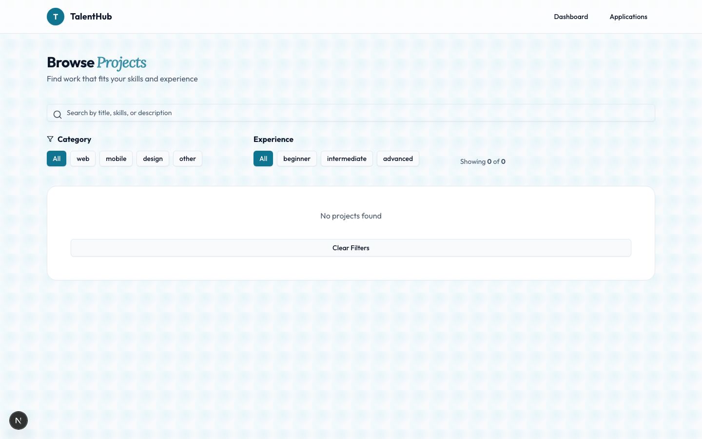
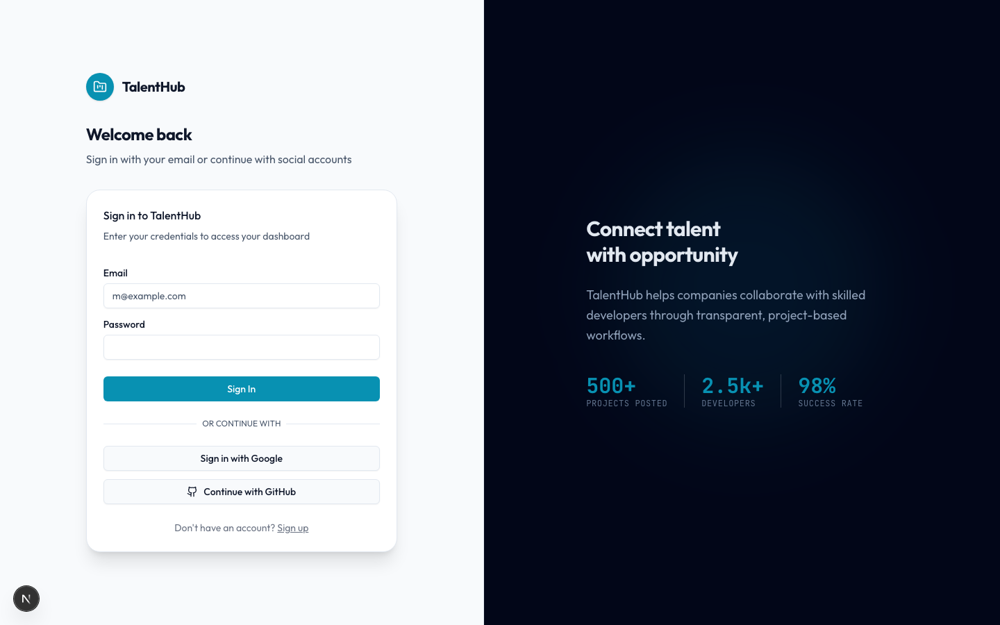

TalentHub Retheme Project
Design Score: 40 → 100
Based on an evidence-based checklist evaluating design layout quality, accessibility compliance, visual tells, and typography hierarchy.
Before & After Comparison
The original login screen and dashboards featured generic layout divisions and stock template colors. They have been replaced with a premium, technically precise design.

Original Design (Saturated stock template)

Rethemed Design (Precision technical layout)
What Was Wrong
- Generic Template Gradients: Saturated indigo and purple gradient blocks competed for attention, giving the site a generic, stock-AI appearance.
- Poor Contrast and Readability: Several core call-to-actions (such as the main login buttons and stat description texts) had contrast ratios too faint to read comfortably, failing accessibility standards.
- Cluttered Corner Borders & Depth Indicators: Panels stacked solid borders with heavy drop shadows, creating visual noise and clutter.
- Flat Default Gaps & Layout Alignment: Containers used a rigid, centered structure without organic asymmetry or distinctive features, making pages look identical.
What Changed
We implemented the custom "Blueprint Telemetry" design lane. The interface now resembles a sleek aerospace console, utilizing precise technical markers and a blueprint grid background for visual structure.
- Curated Palette & Brand Identity: Replaced default templates with a unified, dark/light-mode theme based on Slate and vibrant Electric Cyan accents.
- Structured Typographical Scale: Swapped default fonts for a 7-step scale using Outfit for headers, Lora for editorial highlights, and JetBrains Mono for tech labels.
- Consistent Corner Hierarchy: Set clean border-radius rules (6px for buttons/inputs, 12px for cards, 20px for layouts) to align all visual panels.
- The Telemetry Submission Grid: Rebuilt the dashboards to include a glowing vector submission connection graph, showing live proposal status details inside a monospace console tooltip on hover.
- Motion Polish & Accessibility: Cleaned up heavy animations and added global support to automatically turn off transitions if a user has reduced motion configured on their system.
Verified Deliverables
- VerifiedWCAG AA Accessibility Contrast: All main text elements pass strict contrast checks.
- VerifiedResponsive Layouts: Zero horizontal scrolling issues at mobile (375px), tablet (768px), or desktop (1440px) widths.
- VerifiedLight + Dark Mode: Responsive themes verify readability on both Slate and dark console backdrops.